縮短辦理登機手續時間！ 方便地為您的旅程做好準備！
手機 / 網上辦理登機
這將節省您的時間，讓您在抵達機場後可放鬆一下。
如何使用
| 適用對象 | 營運航線 | 辦理登機手續時間 |
|---|---|---|
| 乘搭大韓航空航班並持有有效電子機票的旅客 | 所有航線 |
|
- (見 1) 往返美國、加拿大、英國和巴黎的航班 : 出發前 24 小時至 1 小時
- 有關手機/網上辦理登機的限制 (點擊此連)
 請確保為自己預留足夠時間接受保安檢查和其他手續（在國際航班出發前 1 小時完成所有手續，而韓國國內航班則為出發前 20 分鐘）
請確保為自己預留足夠時間接受保安檢查和其他手續（在國際航班出發前 1 小時完成所有手續，而韓國國內航班則為出發前 20 分鐘）
如何辦理登機手續

-

Step 1 搜尋預訂
- 若您在訂票時已輸入飛行常客編號，則可以更輕鬆地辦理登機。
- 若未有顯示預訂，則請輸入預訂參考編號或機票號碼，然後輸入出發日期和姓名。
如果您不是主頁主屏幕的機票預訂區域中的非登記成員，則可以通過輸入預訂號碼，出發日期和乘客姓名來開始網上辦理登機手續。
-

Step 2 输入旅行证件信息 (国际航班)
- 必須準確輸入有關護照和所需旅行證件的資料。 若您沒有輸入有效資料，您可能無法辦理登機， 具體情況取決於出發/抵達城市的預檢結果。
- 手機登機選項可讓您使用護照掃描功能輕鬆地輸入護照資料。
可以在Web登記時在第二階段乘客信息輸入屏幕中輸入諸如國籍，護照簽發國家/地區，護照號碼等護照信息。
-

Step 3 選擇座位
- 選擇心儀座位。
- 若您希望更改座位，請使用您的使用者名稱(如非會員，請使用密碼)登入。 (然而，SKYPASS資料必須在登入前儲存。)

網上辦理登機手續步驟3您可以查看每個座位的信息，例如座位號，位置和座位特徵，並從座位分配屏幕中選擇所需的座位。
-

Step 4 完成辦理登機
- 點擊每位旅客的「檢視/列印登機證」以列印登機證。
- 您可以在網上辦理登機截止之前重發登機證和取消辦理登機。
Web登記步驟5在“簽入完成”屏幕中，您可以檢查Web登機狀態或將登機牌發送到PC。
網上辦理登機後於機場的手續
-

01 網上辦理登機和領取登機證
- 準備好您的登機證(手機或列印的登機證)並於出發當天在機場出示。
-

02 抵達機場
持有登機證的旅客
- 若您沒有行李需要寄艙 請帶著您的登機證直接前往大堂，不必在櫃位停留。
-
若您有行李需要寄艙
請於網上辦理登機指定櫃位 (見 2) 將您的行李寄艙，然後前往大堂。
(見 2) 您可於仁川機場的自助行李託運櫃位(D1~D17，E1~E17) 迅速輕鬆地將您的行李寄艙。
如屬持有兌換券的旅客
- 於網上辦理登機指定櫃位領取您的登機證。此外，您亦可以在領取您的登機證時將您的行李寄艙。
-

03 接受保安檢查和辦理出入境手續
- 保安人員將檢查旅客和其個人物品，以確保旅遊人士和飛機的安全。
- 根據出發和抵達國家/地區的要求，攜帶您有效的護照和旅行證件（簽證），然後辦理出入境手續。
-

04 登機
- 您應攜帶您的登機證。